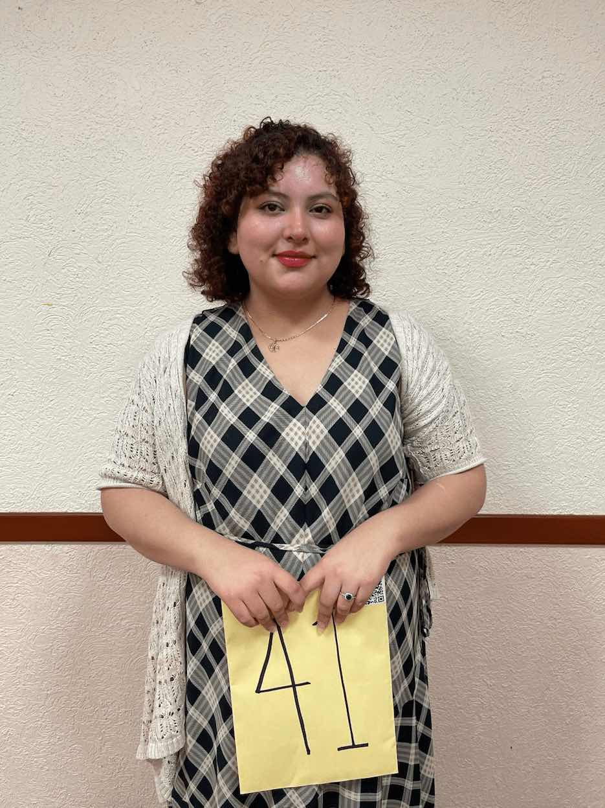

my name is Paola Trevino. I live in San Antonio, Texas, and I am currently studying web development through BYU Pathway. I enjoy learning new skills and improving my creativity in building projects that help me grow professionally. This course is helping me understand how HTML, CSS, and JavaScript work together to create useful and attractive websites.